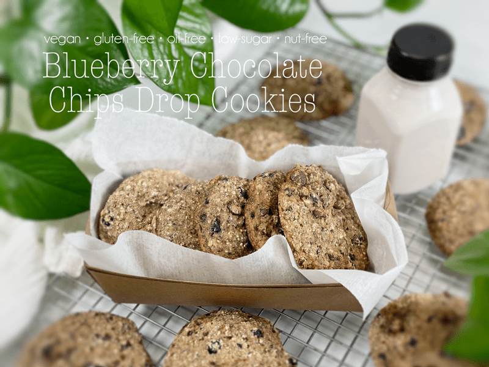
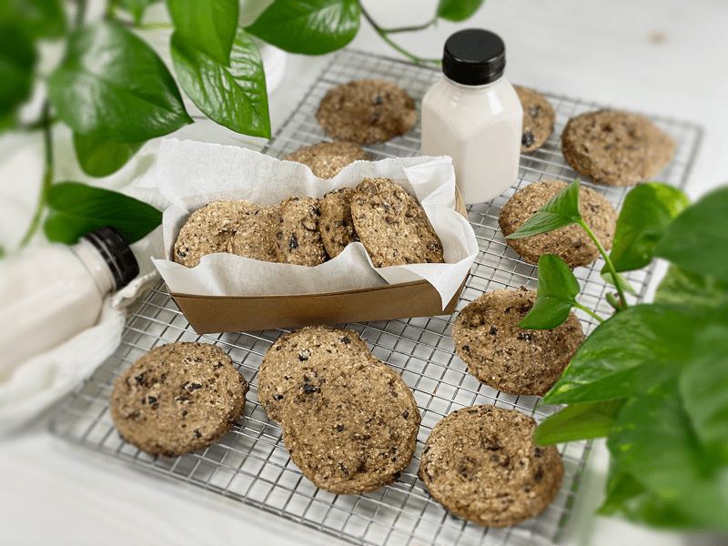
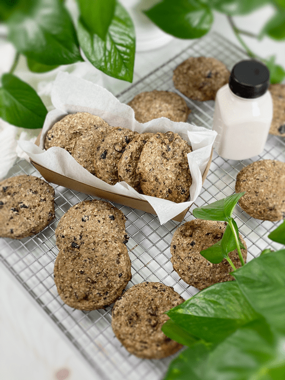

Blueberry Chocolate Chip Drop Cookies | Cooked | Flour-Free | Nut-Free | Oil-Free
Blueberry Chocolate Chip Drop Cookie… I have to giggle because Bob was dead set on my making “drop cookies.” He never uses that term, so I asked him what a drop cookie was. He said, “You know, when you hold the dough high in the air and drop it on the pan.” Okay, fair enough. No matter how I drafted the title of this recipe, he always emphasized that I add DROP COOKIE. The man will get no arguments from me. So today I present to you a cookie that is moist, low in sugar, gluten-free, nut-free, seed-free, vegan, flour-free…hmm, what else could it be FREE from?! Well, I can assure you that taste and nutrients are NOT included in that list.

If you are seeking a really sweet cookie, this may not be the recipe for you. These cookies hold the perfect balance of sweetness through the applesauce, stevia, dried blueberries, and chocolate chips. They are packed full of wholesome nutrients and fiber, which help to curb those sweet treat cravings. BUT, they are not overly sweet and will not leave you in a sugar coma!
Instead of Flour
- Whole Ingredients — To make these cookies from whole foods, I chose to skip the use of calorie-dense flours. Instead of buckwheat flour, I used the whole raw kernels, and instead of oat flour, I used gluten-free rolled oats. I do not recommend replacing these whole food forms with flours, as it will make cookies denser.
- Side Note: I am all about soaking nuts, seeds, and grains since the process helps reduce phytic acid/enzyme inhibitors. But for this recipe, I soaked only the buckwheat. I tried soaking the oats, and the end product turned out gummy inside.
Instead of Gluten
- Psyllium Husks — To replace the need for glutinous flours, I use psyllium husks. Psyllium is used to retain moisture and helps baked goods from becoming too crumbly. It also gives a bread-like texture.
- Side Note: Psyllium husks are also used to increase bulk in your stool, an effect that helps to cause movement of the intestines. It also works by increasing the amount of water in the stool, making the stool softer and easier to pass. I won’t apologize for talking about bowel movements within my cookie recipe–elimination is just as important as what we take in!
Instead of Eggs
- Chia Seeds — To make this a vegan recipe (as all mine are), chia seeds are used instead of eggs.
- Using chia seeds is a great way to add extra nutrients, especially fiber and protein. Chia seeds also replace\s the need for eggs once mixed with water.
Instead of Refined Sugar
- As mentioned above, I used applesauce, stevia, dried blueberries, and chocolate chips to add sweetness to these cookies.
- Stevia — I personally use liquid NuNaturals stevia and recommend it. I tend to add a little bit to some of my sweet recipes just to help “brighten” the sweetness of other sugars being used in the recipe. That way I can reduce the sugar content. If you skip using it, you may need to add some other sweetener that will match your sweet tooth.
- Dried Blueberries — The dried blueberries will also elevate the sweetness, with the added textural experience of pockets of chewiness. Yum! Look for organic, sugar-free, sulfate-free blueberries. I found the best deal at Costco.
- Chocolate Chips — The type of chocolate chips you use will be a personal thing. Nowadays they come in so many different varieties; remember, the higher the cacao, the more bitter they are. They come vegan, gluten-free, sugar-free, etc. READ your labels!
Instead of Oil
- Applesauce — Baking with applesauce instead of oil adds fiber and reduces calories. Because of its water content, applesauce will also keep the cookies moist and fresh longer.
- Side Note: Please use organic, sugar-free applesauce. It’s not so much the added sugar content that I am concerned about, it’s the type of sugars that most companies use that is concerning. Apples are in the top Dirty Dozen when it comes to pesticides, so that is why I am emphasizing organic.

Tips and Techniques
- I encourage you to read through the recipe before starting, because there are a few steps that require soaking and hand mixing. In fact, I have 3 lessons in my Reference Library that talk about How to Tackle a Recipe. I encourage you to check them out. I am all about sharing all the lessons I have learned in the kitchen throughout these years, hoping to make your culinary experience more enjoyable.
- Be sure to line the cookie sheet with either a silicone mat or parchment paper so they don’t stick.
- I made two cookie trays’ worth. One pan was a thick heavy-duty sheet pan and the other was thinner…I found that the cookies browned more on the thinner pan. They both turned out great — just a general observation.
- I used a cookie scoop to form consistently sized cookies. You can drop the dough right off of a spoon if desired. They don’t flatten or spread while baking, so the shape you drop is the shape they will stay. I tapped the pan on the counter-top before sliding it in the oven to knock some of their height down.
Here are some close-up photos so you know what to expect…
I have made this recipe many times over (thanks to Bob) and still to this day he gets super excited when I pull a container of them from the freezer. They are delicious straight out of the oven, or stored in an air-tight container on the counter or in the fridge. They also freeze and thaw magnificently, leaving you with a soft, chewy, delicately sweetened cookie. I hope you enjoy this recipe. Blessings, amie sue

Ingredients
Yields 17 (1/4 cup measurement) cookies
- 1 cup raw whole buckwheat kernels, soaked
- 1 1/2 cups gluten-free rolled oats, not soaked
- 1/4 cup chia seeds
- 1/2 cup psyllium husks (not powder)
- 1/2 cup unsweetened applesauce
- 2 cups water (soak the blueberries in this)
- 1 tsp liquid NuNaturals stevia
- 1 tsp sea salt
- 1 tsp aluminum-free baking powder
- 1/2 tsp baking soda
- 1 cup dried blueberries – hand mix
- 1/2 cup chocolate chips – hand mix
Preparation
Soaking the Buckwheat
- Place the buckwheat in a glass or stainless steel bowl, and cover with double the amount of water.
- Add 2 Tbsp raw apple cider vinegar, stir, and cover with a clean dishtowel.
- Let it sit on the counter for 30 minutes to 4 hours.
- Once ready to use, drain and rinse before adding to the food processor.
Mixing and Baking
- Add the dried blueberries to the 2 cups of water that are listed within the ingredient list.
- Both will be added to the recipe, but at different times.
- The soaking process helps to soften and plump up the blueberries.
- Preheat oven to 350 degrees (F) and prepare your baking pan.
- I bake these cookies on either a silicone sheet or parchment paper to prevent sticking.
- In the food processor, fitted with the “S” blade, combine the rolled oats, chia seeds, psyllium husks (not powder), applesauce, soak water (don’t dump the blueberries in yet), stevia, and salt, along with the buckwheat. Process for a full 30-60 seconds.
- Add the baking powder and baking soda, process 10 seconds.
- Hand-mix in the soaked, dried blueberries and chocolate chips.
- Using a cookie scoop, place the cookie dough on the baking sheet, giving them a little space.
- Once the pan is full, tap it on the countertop to help flatten the dough a little bit. If you don’t do this, they will stay the shape they are as you put them on the tray.
- Bake for roughly 17 minutes.
- Cook time may vary depending on your oven and the size of the cookies, so be sure to keep an eye on the first batch, making note of the cooking time for the next batch.
- Once done baking, transfer the cookies to a cooling rack.
Storage
- Once cooled, you can store them in an airtight container on the counter for a couple of days, or in the fridge for around 5 days. They can also be frozen for up to 3 months before the flavor is compromised.
© AmieSue.com